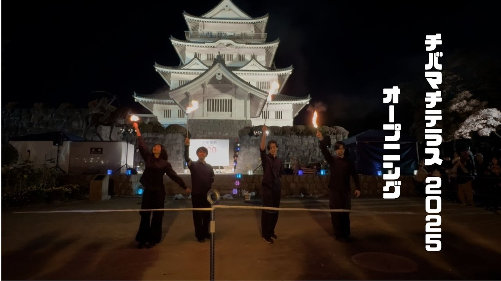
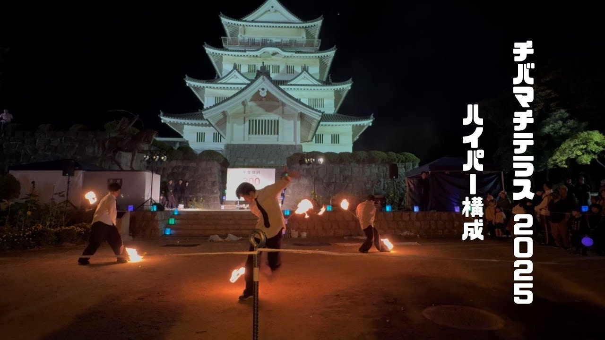
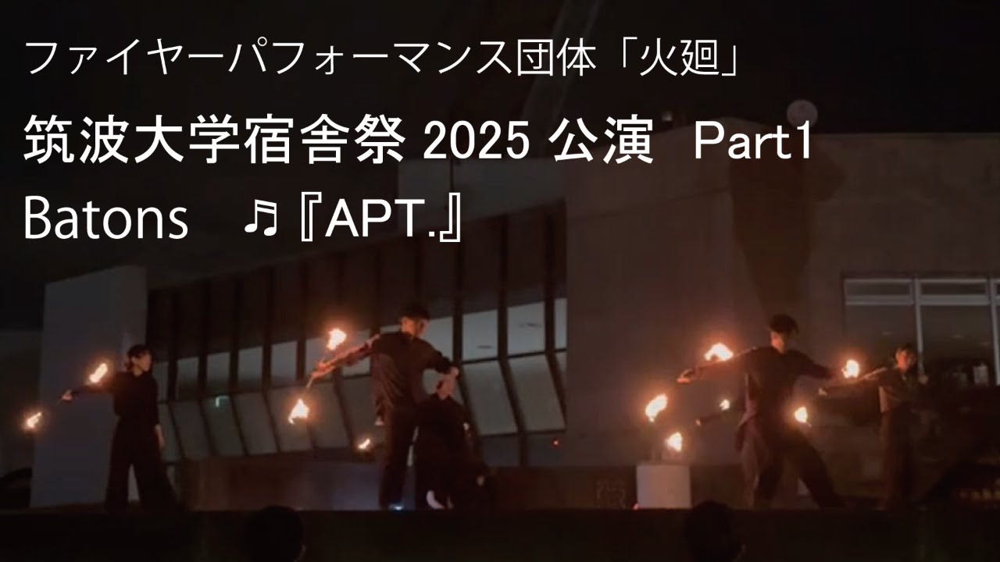
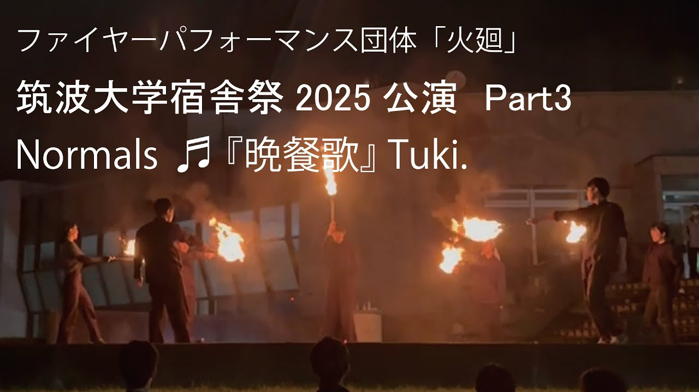

トーチ
片手で持つ、いちばん基本の道具。両手に持てば動きの自由度が高く、 大人数で並んだときの一体感がいちばん出ます。
ABOUT
「火廻（ひまわり）」は、関東を中心に活動するファイヤーパフォーマンス団体です。
トーチ・バトン・ロングスタッフといった道具に火を灯し、 火を扱う技術とダンスを組み合わせた演技を行っています。 夏祭り、地域のイベント、大学祭のステージなど、 夜の会場をまるごと変える炎舞をお届けします。
関東に限らず、ご依頼をいただければパフォーマーが演技をしに参上します。 演目は会場の広さや進行に合わせて組み立てますので、まずはお気軽にご相談ください。
PROPS
火廻が扱うのは、この 3 つ。それぞれ火の見え方も、身体の動かし方も違います。
片手で持つ、いちばん基本の道具。両手に持てば動きの自由度が高く、 大人数で並んだときの一体感がいちばん出ます。
両端に火が付いた棒。回すと炎が輪になって残り、 ひとつひとつの手数がそのまま軌跡として見えるのが持ち味です。
身の丈ほどある長い棒。振りが大きく、遠くの客席からでもよく見えるので、 広い会場での見せ場に向いています。
MOVIE
実際の公演の様子は YouTube で公開しています。まずは 1 本、火の音ごと見てください。
PHOTO
城址、大学、夏祭りの広場。会場が変われば、炎の見え方も変わります。




※ 掲載中の写真は YouTube 公開動画から起こしたものです。動画のタイトル文字が入らないよう
トリミングして表示しています。撮り下ろしの写真があれば assets/img/ の画像を
差し替えてください（そのときは style.css のトリミング指定も外せます）。
WORKS
これまでに出演させていただいたイベントです。各公演の映像は YouTube で公開しています。
202608.02
202605.29
202511.15
202508.17
202505.30
BOOKING
お祭り・地域のイベント・学園祭など、規模を問わずご相談ください。 関東以外の会場もご相談いただけます。
火を扱う都合上、会場の管理者や消防への確認が必要になる場合があります。 日程が決まりましたら、早めにご相談いただけると調整しやすくなります。
上記が決まっていなくても構いません。「こんなイベントをやりたい」という段階からご相談いただけます。
CONTACT
出演のご依頼は、メールまたは各 SNS の DM からお待ちしています。